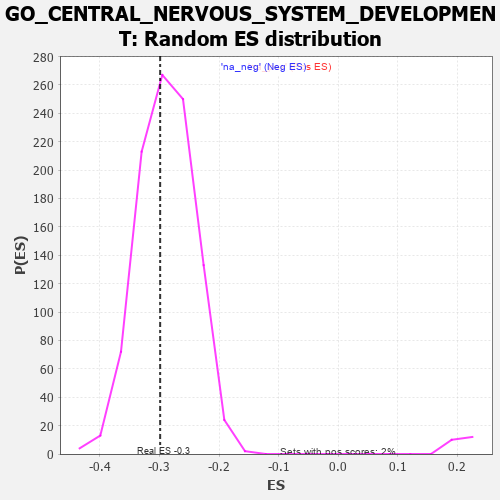

| | | Dataset | 7d |
| Phenotype | NoPhenotypeAvailable |
| Upregulated in class | na_neg |
| GeneSet | GO_CENTRAL_NERVOUS_SYSTEM_DEVELOPMENT |
| Enrichment Score (ES) | -0.29889426 |
| Normalized Enrichment Score (NES) | -1.0369358 |
| Nominal p-value | 0.41002044 |
| FDR q-value | 0.8201687 |
| FWER p-Value | 1.0 |
Table: GSEA Results Summary
 Fig 1: Enrichment plot: GO_CENTRAL_NERVOUS_SYSTEM_DEVELOPMENT
Fig 1: Enrichment plot: GO_CENTRAL_NERVOUS_SYSTEM_DEVELOPMENT
Profile of the Running ES Score & Positions of GeneSet Members on the Rank Ordered List
| PROBE | GENE SYMBOL | GENE_TITLE | RANK IN GENE LIST | RANK METRIC SCORE | RUNNING ES | CORE ENRICHMENT | | 1 | HMX3 | | | 17 | 4.775 | 0.0320 | No |
| 2 | H2AX | | | 20 | 4.738 | 0.0658 | No |
| 3 | DCLK1 | | | 55 | 2.532 | 0.0795 | No |
| 4 | EMX2 | | | 117 | 1.451 | 0.0820 | No |
| 5 | OLIG3 | | | 149 | 1.268 | 0.0871 | No |
| 6 | DNER | | | 188 | 1.098 | 0.0901 | No |
| 7 | LBX1 | | | 254 | 0.929 | 0.0883 | No |
| 8 | TBX20 | | | 267 | 0.880 | 0.0931 | No |
| 9 | ARX | | | 322 | 0.782 | 0.0917 | No |
| 10 | DLL1 | | | 337 | 0.760 | 0.0953 | No |
| 11 | CLN5 | | | 346 | 0.751 | 0.0997 | No |
| 12 | SOX13 | | | 380 | 0.717 | 0.1005 | No |
| 13 | BAX | | | 387 | 0.711 | 0.1049 | No |
| 14 | EED | | | 409 | 0.690 | 0.1071 | No |
| 15 | SUFU | | | 443 | 0.665 | 0.1076 | No |
| 16 | WRN | | | 469 | 0.649 | 0.1090 | No |
| 17 | LRP1 | | | 470 | 0.648 | 0.1137 | No |
| 18 | HTRA2 | | | 527 | 0.621 | 0.1109 | No |
| 19 | PSMG1 | | | 538 | 0.615 | 0.1140 | No |
| 20 | SRF | | | 542 | 0.615 | 0.1180 | No |
| 21 | PITX3 | | | 594 | 0.596 | 0.1157 | No |
| 22 | SMG9 | | | 643 | 0.579 | 0.1136 | No |
| 23 | HES5 | | | 661 | 0.571 | 0.1155 | No |
| 24 | XRCC6 | | | 694 | 0.560 | 0.1154 | No |
| 25 | ID1 | | | 719 | 0.555 | 0.1163 | No |
| 26 | ZIC3 | | | 760 | 0.542 | 0.1150 | No |
| 27 | RERE | | | 787 | 0.536 | 0.1154 | No |
| 28 | WLS | | | 907 | 0.505 | 0.1037 | No |
| 29 | ZPR1 | | | 967 | 0.491 | 0.0995 | No |
| 30 | MEN1 | | | 1003 | 0.483 | 0.0985 | No |
| 31 | AKT1 | | | 1040 | 0.476 | 0.0972 | No |
| 32 | MYO1D | | | 1099 | 0.464 | 0.0930 | No |
| 33 | SRC | | | 1128 | 0.459 | 0.0927 | No |
| 34 | EMX1 | | | 1143 | 0.455 | 0.0942 | No |
| 35 | CLP1 | | | 1182 | 0.450 | 0.0925 | No |
| 36 | STK36 | | | 1193 | 0.448 | 0.0944 | No |
| 37 | ELP3 | | | 1223 | 0.442 | 0.0938 | No |
| 38 | NSUN5 | | | 1230 | 0.442 | 0.0962 | No |
| 39 | KDM7A | | | 1248 | 0.439 | 0.0971 | No |
| 40 | COQ8B | | | 1282 | 0.434 | 0.0960 | No |
| 41 | THOC6 | | | 1316 | 0.426 | 0.0948 | No |
| 42 | DRGX | | | 1378 | 0.414 | 0.0898 | No |
| 43 | SSBP3 | | | 1396 | 0.411 | 0.0906 | No |
| 44 | DOCK7 | | | 1398 | 0.410 | 0.0934 | No |
| 45 | TIMP2 | | | 1478 | 0.394 | 0.0860 | No |
| 46 | SOS1 | | | 1547 | 0.384 | 0.0799 | No |
| 47 | CNTN4 | | | 1571 | 0.379 | 0.0797 | No |
| 48 | FZD1 | | | 1574 | 0.379 | 0.0821 | No |
| 49 | TPPP | | | 1646 | 0.365 | 0.0756 | No |
| 50 | ERCC2 | | | 1712 | 0.354 | 0.0697 | No |
| 51 | MEIS1 | | | 1723 | 0.351 | 0.0709 | No |
| 52 | ABR | | | 1812 | 0.335 | 0.0619 | No |
| 53 | CIC | | | 1988 | 0.307 | 0.0415 | No |
| 54 | ROR1 | | | 1993 | 0.306 | 0.0431 | No |
| 55 | MEIS2 | | | 2063 | 0.296 | 0.0363 | No |
| 56 | KCNC2 | | | 2075 | 0.295 | 0.0370 | No |
| 57 | BMP7 | | | 2107 | 0.290 | 0.0351 | No |
| 58 | UBA6 | | | 2114 | 0.289 | 0.0364 | No |
| 59 | MEIS3 | | | 2188 | 0.278 | 0.0289 | No |
| 60 | OTP | | | 2209 | 0.275 | 0.0283 | No |
| 61 | WDR89 | | | 2241 | 0.270 | 0.0262 | No |
| 62 | CREB1 | | | 2243 | 0.269 | 0.0280 | No |
| 63 | XRCC1 | | | 2287 | 0.262 | 0.0244 | No |
| 64 | SIN3A | | | 2361 | 0.251 | 0.0167 | No |
| 65 | PBX4 | | | 2406 | 0.245 | 0.0128 | No |
| 66 | KDM1A | | | 2447 | 0.237 | 0.0093 | No |
| 67 | NUMB | | | 2519 | 0.224 | 0.0017 | No |
| 68 | MBD3 | | | 2524 | 0.223 | 0.0028 | No |
| 69 | RAD1 | | | 2528 | 0.223 | 0.0040 | No |
| 70 | BAG3 | | | 2620 | 0.209 | -0.0063 | No |
| 71 | GNPAT | | | 2629 | 0.208 | -0.0058 | No |
| 72 | ROGDI | | | 2633 | 0.207 | -0.0047 | No |
| 73 | ATRN | | | 2640 | 0.207 | -0.0040 | No |
| 74 | SLIT2 | | | 2724 | 0.195 | -0.0134 | No |
| 75 | RORA | | | 2730 | 0.193 | -0.0126 | No |
| 76 | TTLL1 | | | 2764 | 0.189 | -0.0155 | No |
| 77 | PRDM8 | | | 2801 | 0.183 | -0.0189 | No |
| 78 | NR2E1 | | | 2844 | 0.177 | -0.0231 | No |
| 79 | FGFR2 | | | 2895 | 0.167 | -0.0283 | No |
| 80 | ZC4H2 | | | 2907 | 0.164 | -0.0286 | No |
| 81 | UNC5C | | | 2997 | 0.150 | -0.0390 | No |
| 82 | COX17 | | | 3019 | 0.147 | -0.0407 | No |
| 83 | WNT4 | | | 3023 | 0.146 | -0.0400 | No |
| 84 | BRCA2 | | | 3024 | 0.146 | -0.0390 | No |
| 85 | LEF1 | | | 3037 | 0.144 | -0.0395 | No |
| 86 | FEZ1 | | | 3055 | 0.142 | -0.0407 | No |
| 87 | MAP2 | | | 3074 | 0.140 | -0.0420 | No |
| 88 | HDAC1 | | | 3086 | 0.138 | -0.0424 | No |
| 89 | LHX3 | | | 3092 | 0.138 | -0.0421 | No |
| 90 | WWP1 | | | 3127 | 0.133 | -0.0455 | No |
| 91 | TLX3 | | | 3140 | 0.131 | -0.0462 | No |
| 92 | PAX6 | | | 3170 | 0.127 | -0.0490 | No |
| 93 | SCYL1 | | | 3172 | 0.126 | -0.0482 | No |
| 94 | TRIO | | | 3192 | 0.123 | -0.0498 | No |
| 95 | RFX4 | | | 3334 | 0.099 | -0.0673 | No |
| 96 | SMAD1 | | | 3337 | 0.099 | -0.0669 | No |
| 97 | MED1 | | | 3405 | 0.089 | -0.0749 | No |
| 98 | KIF1A | | | 3415 | 0.088 | -0.0755 | No |
| 99 | CDK5 | | | 3480 | 0.080 | -0.0832 | No |
| 100 | GLI1 | | | 3489 | 0.079 | -0.0836 | No |
| 101 | UFM1 | | | 3506 | 0.077 | -0.0852 | No |
| 102 | MAPK3 | | | 3589 | 0.062 | -0.0953 | No |
| 103 | CCKAR | | | 3648 | 0.051 | -0.1025 | No |
| 104 | NF1 | | | 3713 | 0.040 | -0.1105 | No |
| 105 | SKI | | | 3762 | 0.032 | -0.1164 | No |
| 106 | WDR47 | | | 3823 | 0.023 | -0.1241 | No |
| 107 | RAB18 | | | 3886 | 0.013 | -0.1320 | No |
| 108 | NIPBL | | | 3900 | 0.010 | -0.1336 | No |
| 109 | TMX2 | | | 3911 | 0.008 | -0.1348 | No |
| 110 | NRG3 | | | 3925 | 0.005 | -0.1365 | No |
| 111 | TOP2B | | | 3938 | 0.005 | -0.1380 | No |
| 112 | EXT1 | | | 3954 | 0.001 | -0.1399 | No |
| 113 | MCPH1 | | | 4039 | -0.014 | -0.1507 | No |
| 114 | TAL1 | | | 4064 | -0.018 | -0.1537 | No |
| 115 | SFRP2 | | | 4065 | -0.018 | -0.1535 | No |
| 116 | ROBO2 | | | 4066 | -0.018 | -0.1534 | No |
| 117 | WNT2 | | | 4084 | -0.021 | -0.1555 | No |
| 118 | MTOR | | | 4114 | -0.025 | -0.1590 | No |
| 119 | ABL1 | | | 4125 | -0.027 | -0.1601 | No |
| 120 | CRK | | | 4139 | -0.031 | -0.1616 | No |
| 121 | MACO1 | | | 4162 | -0.035 | -0.1642 | No |
| 122 | SYNJ1 | | | 4173 | -0.038 | -0.1652 | No |
| 123 | PDX1 | | | 4179 | -0.038 | -0.1656 | No |
| 124 | UNC5D | | | 4217 | -0.044 | -0.1701 | No |
| 125 | PAX5 | | | 4255 | -0.051 | -0.1745 | No |
| 126 | LHX5 | | | 4332 | -0.066 | -0.1839 | No |
| 127 | ARF4 | | | 4383 | -0.073 | -0.1898 | No |
| 128 | SETD2 | | | 4443 | -0.084 | -0.1968 | No |
| 129 | LRRK2 | | | 4467 | -0.087 | -0.1992 | No |
| 130 | NTRK2 | | | 4543 | -0.104 | -0.2082 | No |
| 131 | BAG6 | | | 4563 | -0.108 | -0.2098 | No |
| 132 | CMA1 | | | 4580 | -0.114 | -0.2111 | No |
| 133 | SYT4 | | | 4590 | -0.116 | -0.2114 | No |
| 134 | ATOH1 | | | 4615 | -0.121 | -0.2137 | No |
| 135 | DLG5 | | | 4619 | -0.121 | -0.2132 | No |
| 136 | LMX1A | | | 4631 | -0.124 | -0.2137 | No |
| 137 | NMUR2 | | | 4646 | -0.127 | -0.2146 | No |
| 138 | LHX2 | | | 4716 | -0.143 | -0.2225 | No |
| 139 | DCX | | | 4721 | -0.143 | -0.2220 | No |
| 140 | WASF3 | | | 4730 | -0.145 | -0.2220 | No |
| 141 | ZIC4 | | | 4732 | -0.146 | -0.2211 | No |
| 142 | RTN4 | | | 4783 | -0.154 | -0.2265 | No |
| 143 | WDR1 | | | 4824 | -0.163 | -0.2305 | No |
| 144 | CLU | | | 4889 | -0.174 | -0.2375 | No |
| 145 | ATRX | | | 4929 | -0.184 | -0.2412 | No |
| 146 | SUZ12 | | | 4931 | -0.185 | -0.2400 | No |
| 147 | MNX1 | | | 4939 | -0.186 | -0.2396 | No |
| 148 | FZD4 | | | 4940 | -0.186 | -0.2383 | No |
| 149 | XRCC5 | | | 4946 | -0.187 | -0.2376 | No |
| 150 | PRKDC | | | 4955 | -0.189 | -0.2373 | No |
| 151 | TRA2B | | | 4962 | -0.191 | -0.2367 | No |
| 152 | DRD2 | | | 5088 | -0.221 | -0.2513 | No |
| 153 | ITSN1 | | | 5094 | -0.222 | -0.2503 | No |
| 154 | TBX1 | | | 5166 | -0.241 | -0.2578 | No |
| 155 | SMO | | | 5195 | -0.247 | -0.2596 | No |
| 156 | ATM | | | 5210 | -0.249 | -0.2597 | No |
| 157 | PTEN | | | 5262 | -0.261 | -0.2644 | No |
| 158 | EPHA4 | | | 5273 | -0.265 | -0.2638 | No |
| 159 | CD9 | | | 5319 | -0.277 | -0.2676 | No |
| 160 | GRIN1 | | | 5381 | -0.291 | -0.2734 | No |
| 161 | SOX8 | | | 5404 | -0.296 | -0.2742 | No |
| 162 | MDGA1 | | | 5424 | -0.301 | -0.2745 | No |
| 163 | STIL | | | 5483 | -0.314 | -0.2797 | No |
| 164 | FGFR1 | | | 5543 | -0.332 | -0.2850 | No |
| 165 | SPHK1 | | | 5576 | -0.339 | -0.2867 | No |
| 166 | NDE1 | | | 5578 | -0.339 | -0.2844 | No |
| 167 | ROR2 | | | 5626 | -0.353 | -0.2879 | No |
| 168 | ASPM | | | 5637 | -0.358 | -0.2867 | No |
| 169 | G6PD | | | 5638 | -0.358 | -0.2841 | No |
| 170 | TTBK2 | | | 5700 | -0.376 | -0.2893 | No |
| 171 | SLIT1 | | | 5735 | -0.387 | -0.2909 | No |
| 172 | TLR2 | | | 5761 | -0.395 | -0.2913 | No |
| 173 | BBS4 | | | 5806 | -0.407 | -0.2941 | No |
| 174 | DBX1 | | | 5844 | -0.417 | -0.2959 | Yes |
| 175 | ARL6 | | | 5847 | -0.417 | -0.2932 | Yes |
| 176 | SZT2 | | | 5882 | -0.429 | -0.2945 | Yes |
| 177 | SUN2 | | | 5893 | -0.433 | -0.2927 | Yes |
| 178 | VLDLR | | | 5898 | -0.434 | -0.2901 | Yes |
| 179 | UFC1 | | | 5925 | -0.443 | -0.2903 | Yes |
| 180 | DCTN1 | | | 5950 | -0.454 | -0.2901 | Yes |
| 181 | PGAP1 | | | 5958 | -0.457 | -0.2878 | Yes |
| 182 | TTBK1 | | | 5969 | -0.460 | -0.2857 | Yes |
| 183 | PPT1 | | | 6038 | -0.485 | -0.2911 | Yes |
| 184 | UBB | | | 6090 | -0.503 | -0.2941 | Yes |
| 185 | ABCB6 | | | 6106 | -0.507 | -0.2924 | Yes |
| 186 | TACC2 | | | 6130 | -0.514 | -0.2917 | Yes |
| 187 | GBA2 | | | 6136 | -0.515 | -0.2886 | Yes |
| 188 | STK4 | | | 6145 | -0.518 | -0.2859 | Yes |
| 189 | FEZF2 | | | 6150 | -0.519 | -0.2827 | Yes |
| 190 | GRID2 | | | 6170 | -0.528 | -0.2814 | Yes |
| 191 | VIT | | | 6215 | -0.541 | -0.2832 | Yes |
| 192 | CDC42 | | | 6236 | -0.548 | -0.2819 | Yes |
| 193 | PEX13 | | | 6255 | -0.557 | -0.2802 | Yes |
| 194 | CDON | | | 6378 | -0.607 | -0.2917 | Yes |
| 195 | BBS2 | | | 6383 | -0.608 | -0.2878 | Yes |
| 196 | CSK | | | 6428 | -0.630 | -0.2890 | Yes |
| 197 | ABCA2 | | | 6433 | -0.634 | -0.2850 | Yes |
| 198 | SRR | | | 6464 | -0.646 | -0.2842 | Yes |
| 199 | HERC1 | | | 6467 | -0.647 | -0.2798 | Yes |
| 200 | SOX2 | | | 6477 | -0.652 | -0.2763 | Yes |
| 201 | PTBP2 | | | 6499 | -0.661 | -0.2743 | Yes |
| 202 | ROBO1 | | | 6577 | -0.699 | -0.2793 | Yes |
| 203 | SCYL2 | | | 6621 | -0.724 | -0.2796 | Yes |
| 204 | PTPRS | | | 6646 | -0.738 | -0.2774 | Yes |
| 205 | PAK1 | | | 6691 | -0.757 | -0.2777 | Yes |
| 206 | EGFR | | | 6708 | -0.765 | -0.2743 | Yes |
| 207 | GSK3B | | | 6719 | -0.768 | -0.2701 | Yes |
| 208 | KIF27 | | | 6750 | -0.786 | -0.2683 | Yes |
| 209 | C2CD3 | | | 6783 | -0.802 | -0.2667 | Yes |
| 210 | AHI1 | | | 6860 | -0.848 | -0.2705 | Yes |
| 211 | LRP8 | | | 6931 | -0.889 | -0.2732 | Yes |
| 212 | FAT4 | | | 6948 | -0.901 | -0.2688 | Yes |
| 213 | CTNS | | | 7044 | -0.965 | -0.2741 | Yes |
| 214 | MYH10 | | | 7048 | -0.966 | -0.2676 | Yes |
| 215 | BBS7 | | | 7089 | -0.988 | -0.2657 | Yes |
| 216 | RYK | | | 7102 | -1.000 | -0.2601 | Yes |
| 217 | WHRN | | | 7139 | -1.025 | -0.2574 | Yes |
| 218 | SYT1 | | | 7148 | -1.033 | -0.2510 | Yes |
| 219 | HYDIN | | | 7173 | -1.049 | -0.2466 | Yes |
| 220 | LAMB1 | | | 7220 | -1.094 | -0.2447 | Yes |
| 221 | ARMC4 | | | 7311 | -1.181 | -0.2479 | Yes |
| 222 | EFHC1 | | | 7317 | -1.193 | -0.2400 | Yes |
| 223 | GRN | | | 7319 | -1.194 | -0.2315 | Yes |
| 224 | SPEF2 | | | 7418 | -1.289 | -0.2350 | Yes |
| 225 | LHX1 | | | 7431 | -1.305 | -0.2272 | Yes |
| 226 | CASP2 | | | 7442 | -1.322 | -0.2190 | Yes |
| 227 | NPY | | | 7465 | -1.356 | -0.2121 | Yes |
| 228 | XRN2 | | | 7488 | -1.384 | -0.2050 | Yes |
| 229 | DCLK2 | | | 7529 | -1.439 | -0.1999 | Yes |
| 230 | GRIK1 | | | 7538 | -1.454 | -0.1905 | Yes |
| 231 | GAS8 | | | 7540 | -1.455 | -0.1802 | Yes |
| 232 | DCC | | | 7550 | -1.470 | -0.1708 | Yes |
| 233 | CALM1 | | | 7567 | -1.499 | -0.1621 | Yes |
| 234 | TTPA | | | 7575 | -1.516 | -0.1522 | Yes |
| 235 | PKD1 | | | 7628 | -1.611 | -0.1473 | Yes |
| 236 | TAF1 | | | 7643 | -1.633 | -0.1374 | Yes |
| 237 | PTF1A | | | 7646 | -1.637 | -0.1260 | Yes |
| 238 | ADCY1 | | | 7695 | -1.752 | -0.1196 | Yes |
| 239 | BOK | | | 7715 | -1.817 | -0.1090 | Yes |
| 240 | CASP3 | | | 7747 | -1.902 | -0.0994 | Yes |
| 241 | PKD2 | | | 7822 | -2.167 | -0.0934 | Yes |
| 242 | KCNC1 | | | 7835 | -2.249 | -0.0789 | Yes |
| 243 | DLX5 | | | 7845 | -2.378 | -0.0630 | Yes |
| 244 | CALM3 | | | 7869 | -2.525 | -0.0478 | Yes |
| 245 | FYN | | | 7881 | -2.622 | -0.0305 | Yes |
| 246 | PLCB1 | | | 7904 | -2.841 | -0.0129 | Yes |
| 247 | ASIC2 | | | 7917 | -2.995 | 0.0070 | Yes |
Table: GSEA details [plain text format]

Fig 2: GO_CENTRAL_NERVOUS_SYSTEM_DEVELOPMENT: Random ES distribution
Gene set null distribution of ES for GO_CENTRAL_NERVOUS_SYSTEM_DEVELOPMENT